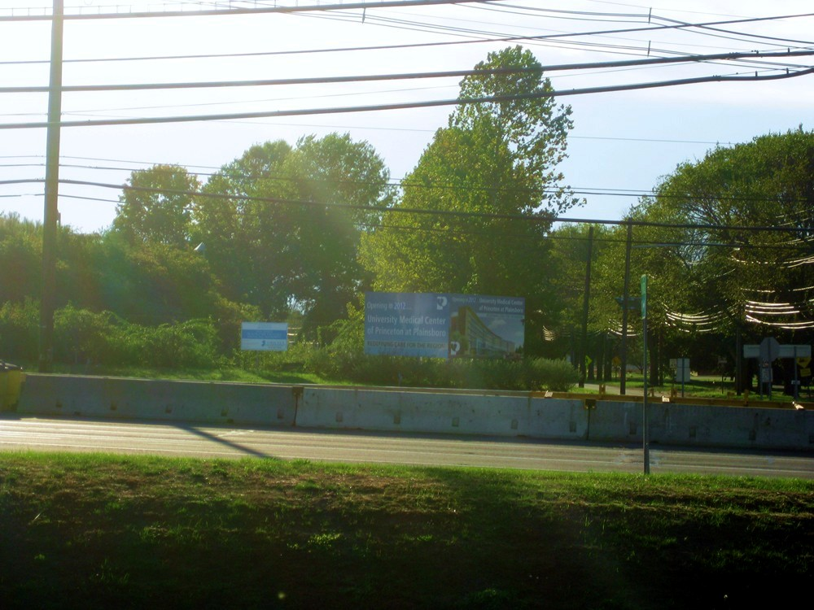
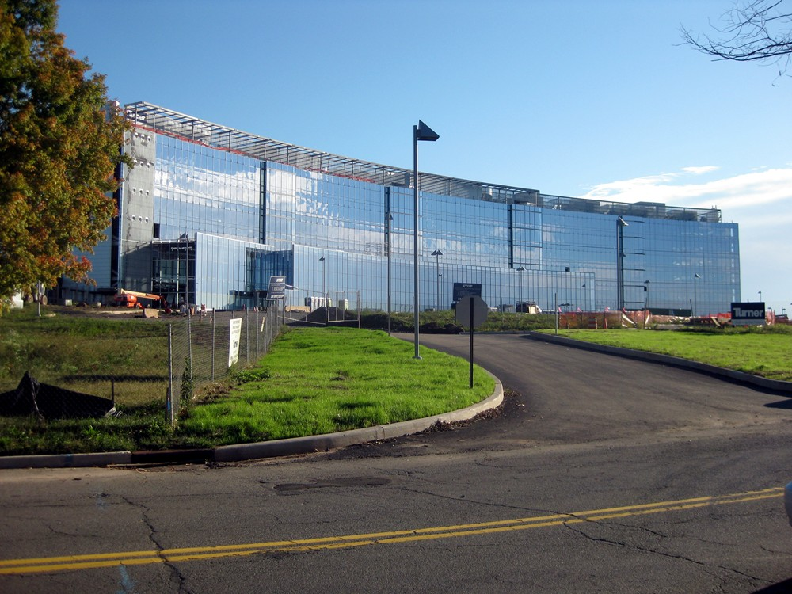
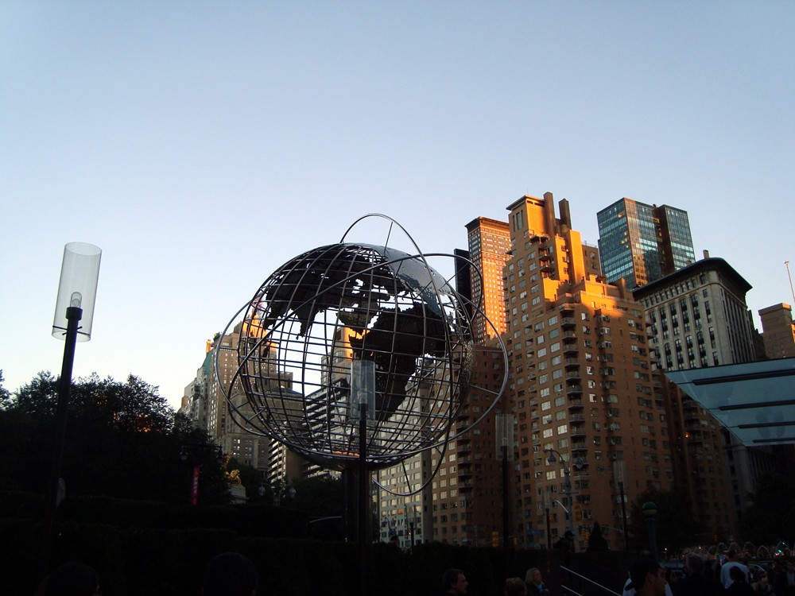
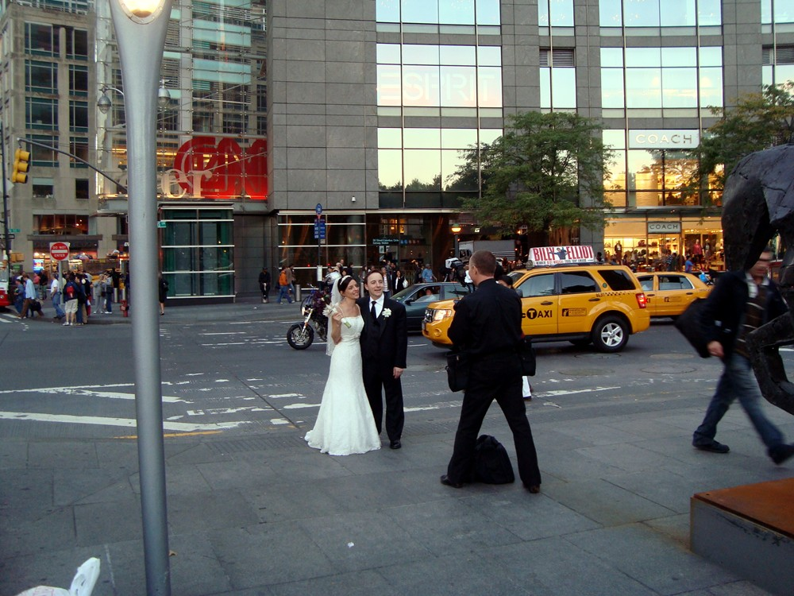
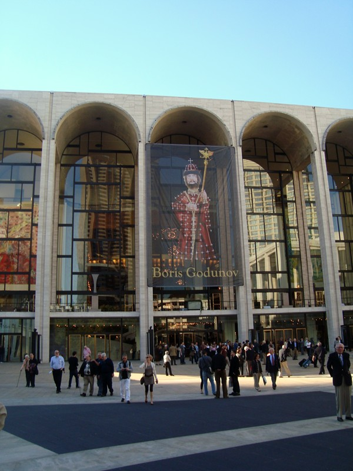
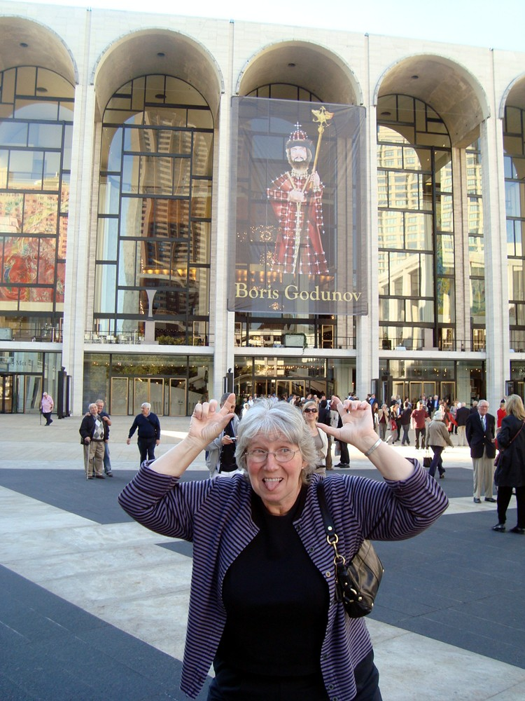
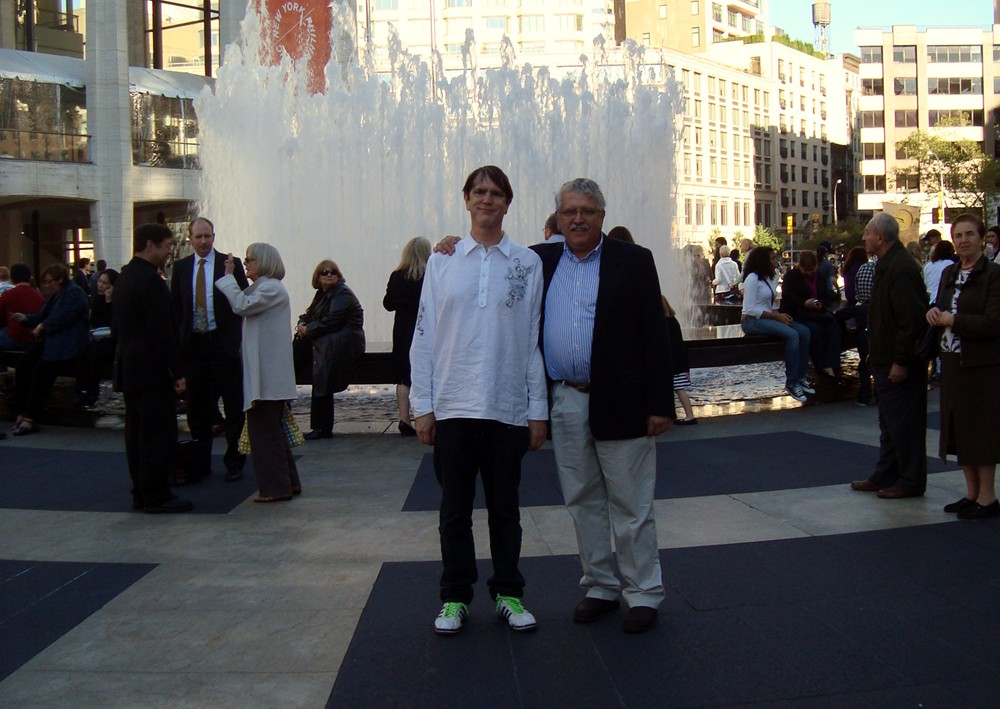
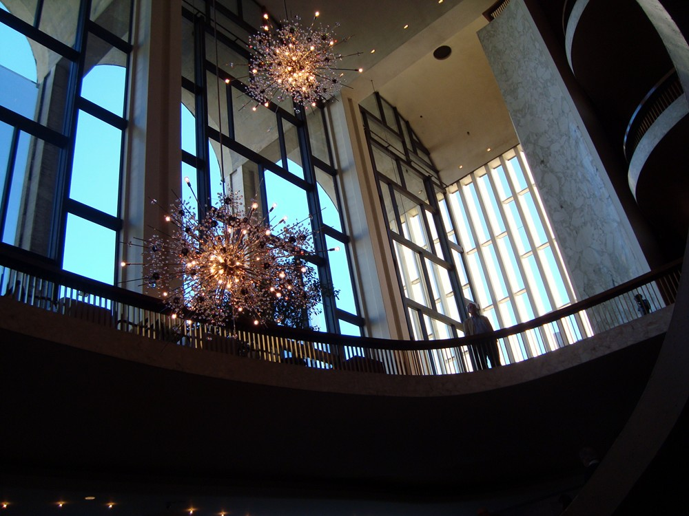
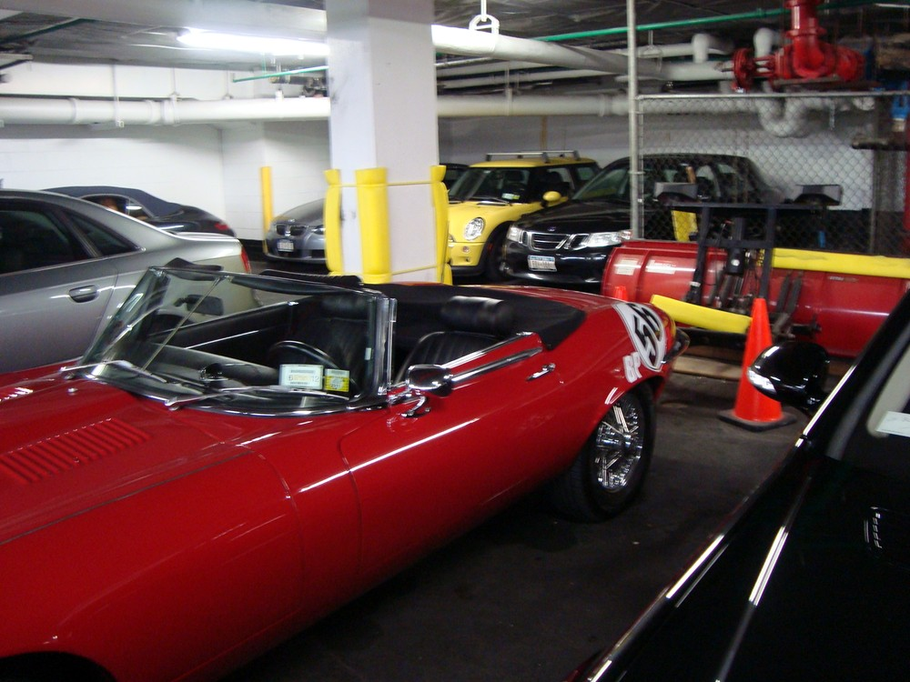

Princeton/Manhattan
2010
 |
Attention House fans! Princeton has no med school--the University considers medicine to be a trade and beneath their dignity. The only reason they have an engineering school is that someone bought a building next to the campus and donated it for that purpose. However, Johnson & Johnson (headquartered in nearby in New Brunswick) is building an actual Princeton-Plainsboro clinic in the small town of Plainsboro, where I lived for a year after graduating. (The best thing about Plainsboro is its proximity to Grover's Mill where the Martians landed, and the Ferminich artificial flavoring plant. True story: They discharge overruns through the sprinkler system and you can smell what they're making--Maple Walunt! Butterscotch! So they have to run the sprinklers even when the ground is snowcovered, and all the geese come for snowcones. |
 |
The hospital won't be a teaching institution, but maybe they'll put a statue of Hugh Laurie in the lobby? |
 |
I was in Princeton to go to Tales of Hoffman at the Met with a couple of friends from grad school living near Princeton. Victor drove us up to Manhattan--Columbus Circle above. |
 |
Brash young things getting married in the circle. |
i
 |
The Met - dignified view. Victor and Lyn had never been to an opera (!). I don't go to many, but Tales of Hoffman was on my bucket list because it was in a book of piano music my mother had, and I loved the plot when I was a kid. Hoffman the poet, unlucky in love, falling for a robot, a consumptive who dies overexerting herself by singing at the behest of her evil physician, and a whore. |
 |
Undignified view |
 |
Victor and I on the plaza |
 |
Interior of Met. Once the show starts they don't permit pictures--even in the lobby even during intermission. Why? Becuase they can? |
 |
Parking lot on W 56th. We offered bribes. They still brought Victor his own car. |